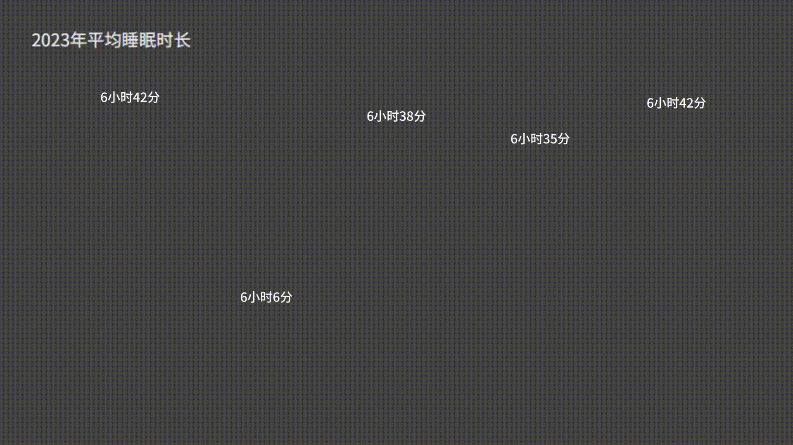
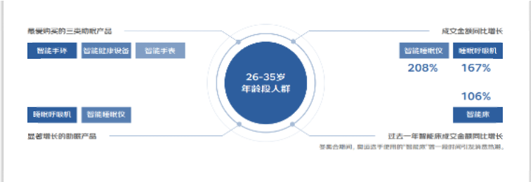
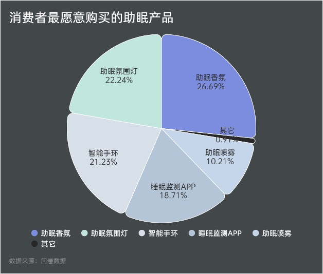
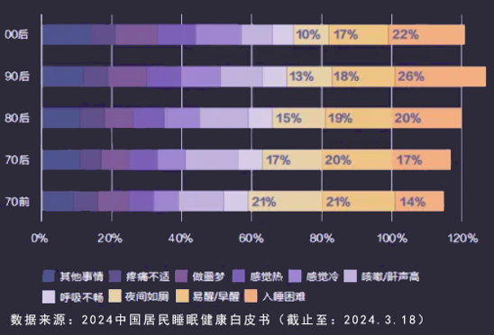

⼩南⼊睡了。睡得⾹吗？
拖拖拉拉洗完澡后，时钟已然⾛到01:24。
（请点击三张图⽚）
2023年，与全球平均值变化相反，我国年轻群体睡眠趋势时⻓呈缩短态势。在我国不同年龄段分布上，整体⽔平在6⼩时40分钟左右，呈现轻微正态分布，其中19-25岁年龄段平均睡眠时⻓最⻓为6⼩时46分钟，但这与2022年年轻群体睡眠时⻓7⼩时相⽐，时⻓缩短变化趋势值得警惕。70前及70后的已退休⼈员常被易醒/早睡、夜间如厕困扰，00后和90后的年轻⼈则困扰于⼊睡困难。随着年龄增⻓，容易受咳嗽/打鼾、易醒/早睡、夜间如厕影响⽽睡不好觉。


2023年，与全球平均值变化相反，我国年轻群体睡眠趋势时⻓呈缩短态势。在我国不同年龄段分布上，整体⽔平在6⼩时40分钟左右，呈现轻微正态分布，其中19-25岁年龄段平均睡眠时⻓最⻓为6⼩时46分钟，但这与2022年年轻群体睡眠时⻓7⼩时相⽐，时⻓缩短变化趋势值得警惕。70前及70后的已退休⼈员常被易醒/早睡、夜间如厕困扰，00后和90后的年轻⼈则困扰于⼊睡困难。随着年龄增⻓，容易受咳嗽/打鼾、易醒/早睡、夜间如厕影响⽽睡不好觉。
2023年，与全球平均值变化相反，我国年轻群体睡眠趋势时⻓呈缩短态势。在我国不同年龄段分布上，整体⽔平在6⼩时40分钟左右，呈现轻微正态分布，其中19-25岁年龄段平均睡眠时⻓最⻓为6⼩时46分钟，但这与2022年年轻群体睡眠时⻓7⼩时相⽐，时⻓缩短变化趋势值得警惕。70前及70后的已退休⼈员常被易醒/早睡、夜间如厕困扰，00后和90后的年轻⼈则困扰于⼊睡困难。随着年龄增⻓，容易受咳嗽/打鼾、易醒/早睡、夜间如厕影响⽽睡不好觉。

